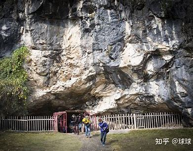
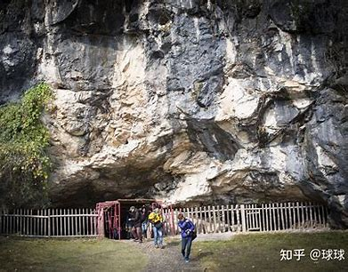

万年县位于江西省上饶市南部，素有“九天之上一片石”之称。这里山清水秀，风景优美，是一座充满自然风光和人文历史的美丽县城。
万年县不仅有着壮美的自然风光，还有着丰富的历史文化底蕴。县内有众多历史名胜，如仙人洞、怪事林、万年县珍珠、万年青、万年贡米、青云古镇等，吸引着众多游客前来观光游览。
无论是山水还是人文，万年县都值得一游。欢迎您来到我的家乡，感受这里的美丽与宁静。
 


版权所有：wdd 技术支持：wdd 电子邮件：18296390980@163.com 联系电话：15707045580
 欢迎来到冬的world！
欢迎来到冬的world！